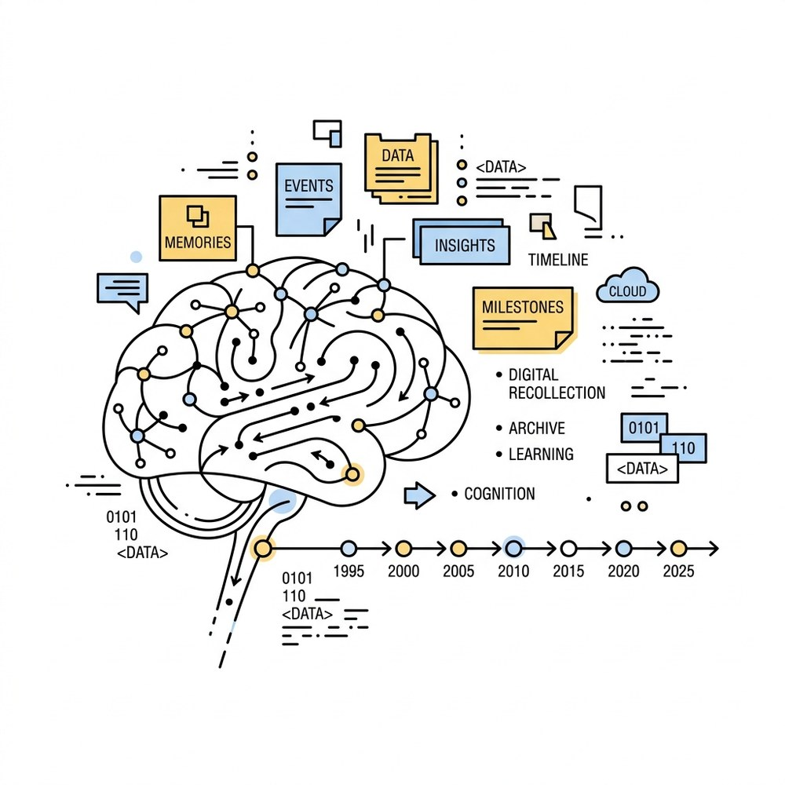
00
唐潘 · Tyler Tang
/
AI Engineer & Builder
TP Space.
builds, creates,
and explores.
这里收录了我平时开发的 AI 工具、个人数据看板、独立产品原型与几篇生活记录。所有项目均部署在云端并保持实时运行，点击即可直达。
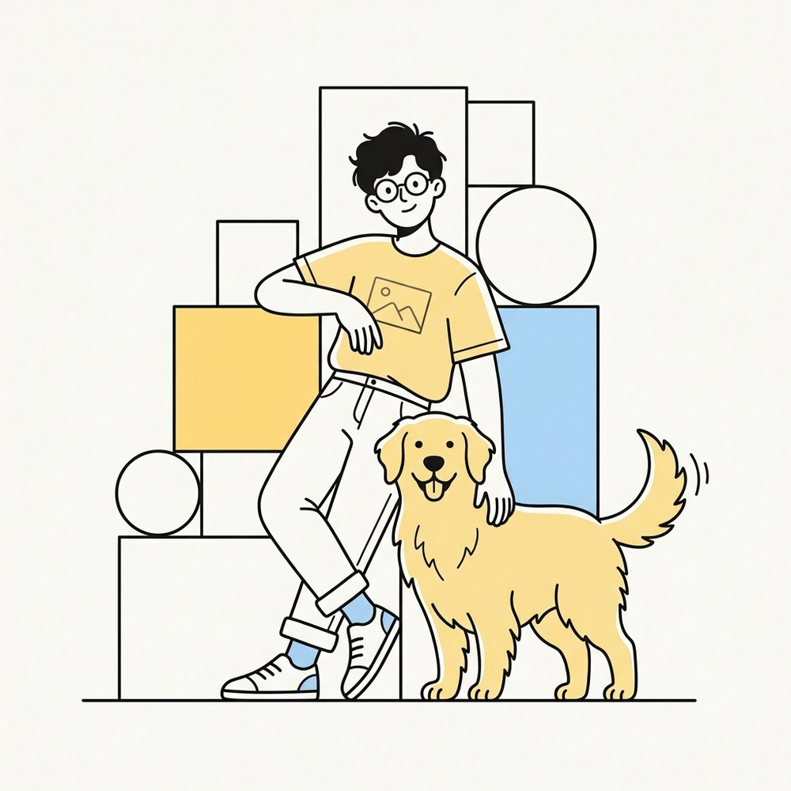
Tyler & Golden Retriever · 2026
01
核心作品与 AI 工具
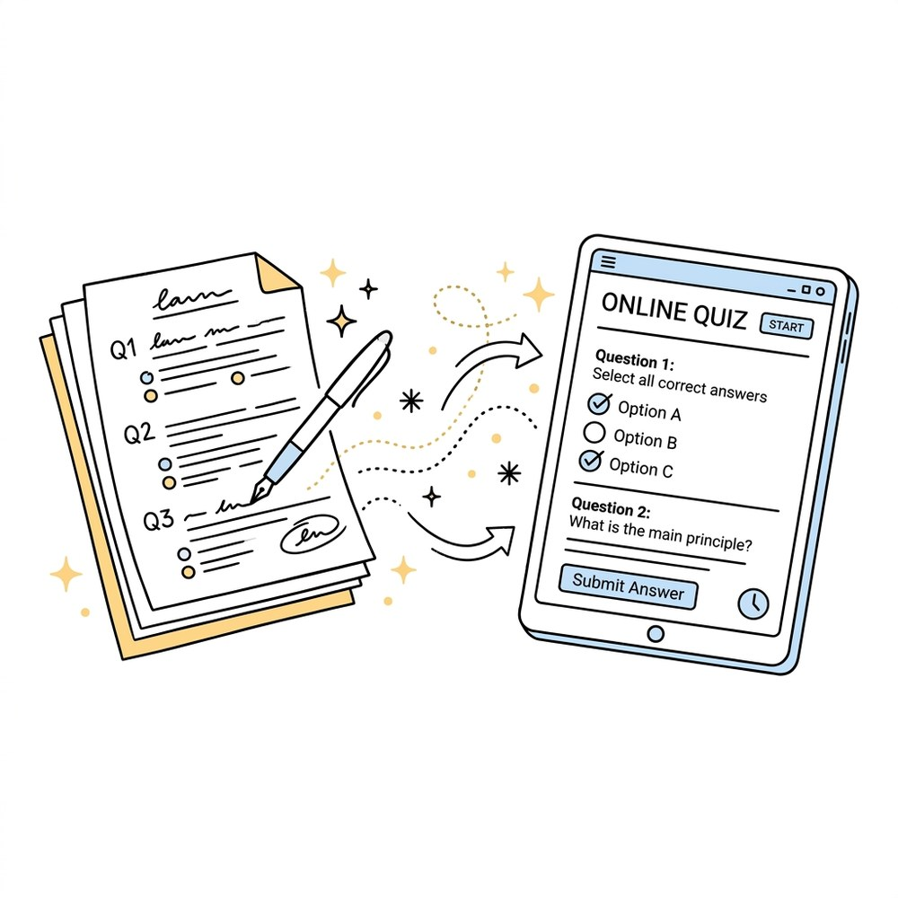
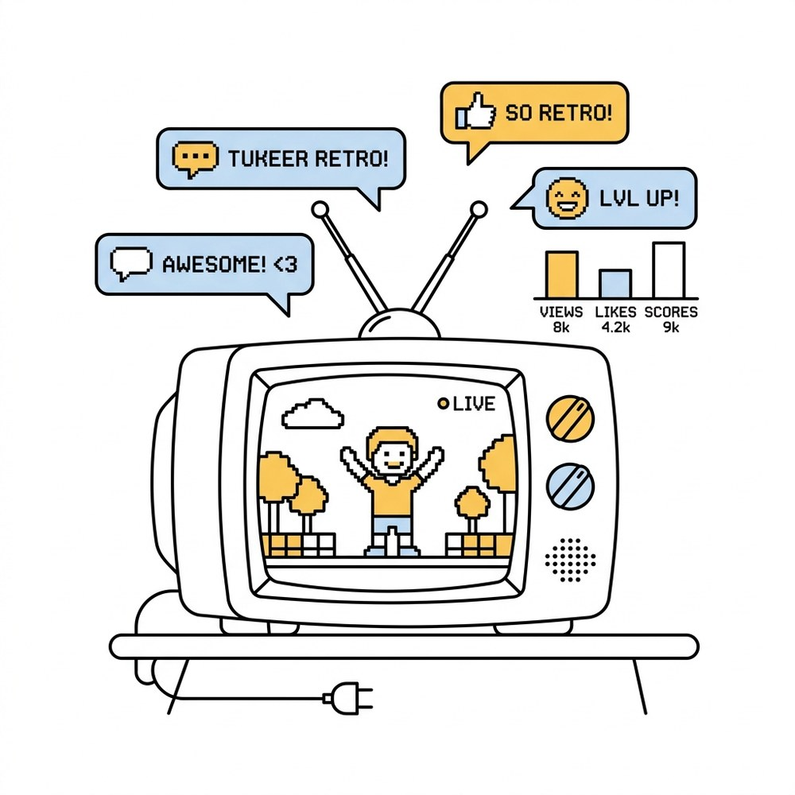
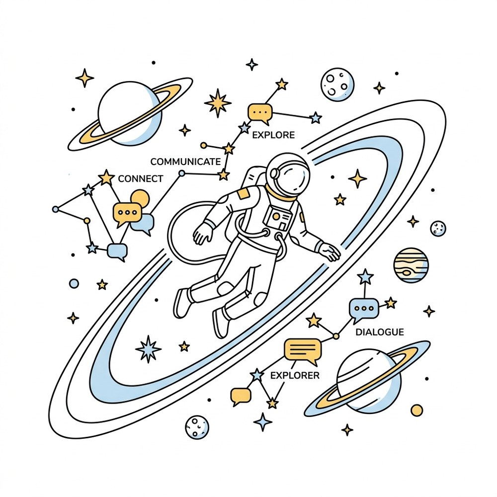
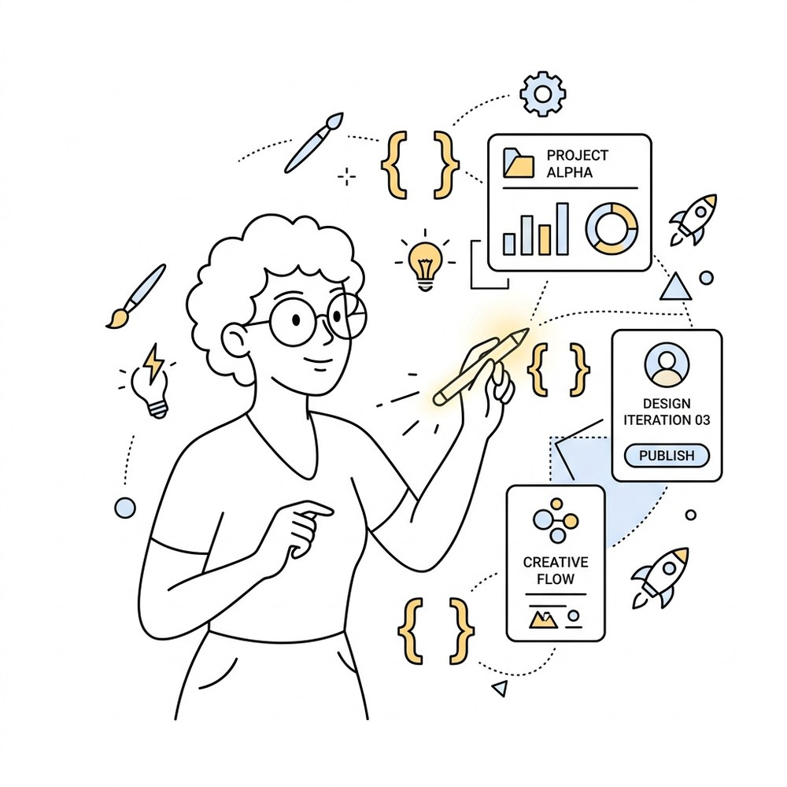
02
全部站点与服务矩阵
03
喜欢的电影与音乐专辑
04
关于与联系方式
热爱折腾新技术、搭建有趣且实用的小产品。目前主要精力放在 AI Agent 工作流、个人知识上下文系统与数据可视化看板上。欢迎交流合作。
微信
添加个人微信
微信扫一扫添加好友
关注抖音主页
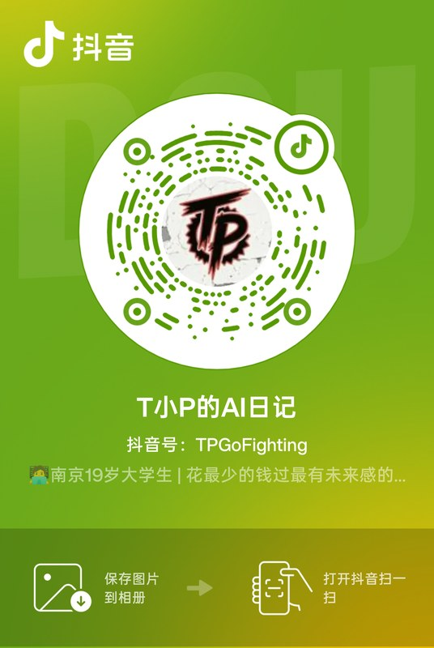
抖音扫一扫查看视频动态
02 / JOURNEY & MILESTONES · 个人叙事
每一步，都是一次主动选择。
从安徽郎溪小镇机房的第一行心形 C 语言程序，到南京微特喜网络技术实习、3D 隧道点云检测系统与 AI 独立开发。记录一个实干工程师的真实成长线。
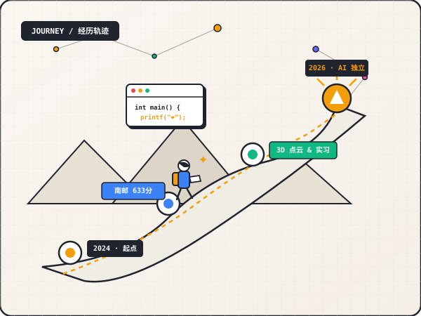
633 分
高考省排 9869 · 录取南邮软件工程 (ESI前1%)
4,249+
抖音科技创作者 · 华为鸿蒙公开课同台嘉宾
30+ 篇
深度技术文章与思考 · Vibe Coding 实战
21+ 个
云端全时运行独立系统 · 全量自主研发部署
2026.05 – 至今
核心 AI Agent
UniEmail Agent · 高校学者智能采集与知识图谱系统
基于 FastAPI + Playwright + Vue 3 + ECharts 构建的全栈智能采集系统。自动化采集南大、南邮、南中医等多所高校教师学者数据，实现 77% 的邮箱高精度覆盖率，构建个人专属学术与学者连接网络。
2026
求职 & 架构
系统级前端与产品沉淀 · 腾讯产品与全栈技术突破
系统备战现代前端架构（React / Vue 3 / Three.js 3D / HTTP3 / TCP 性能优化）与产品战略，融合技术底层逻辑与独立产品经理视角，完成从校园开发者向工业级工程师的跃迁。
2025 – 2026
科研主项目
IntelligentRecognition · 3D 隧道管道点云语义分割系统
王磊老师重点科研项目。基于 PointNet++ 点云深度学习模型，使用 PyQt5 搭建工业级 GUI 交互界面，在 RTX 4060 上实现高精度管网裂缝与构件分割，负责全流程算法训练与系统工程交付。
2025
企业实战
南京微特喜网络技术 · 全栈开发实习
深入商业级实际工程环境，参与微服务接口设计、数据库优化与全栈系统重构，将课堂算法理论转化为高可用工业代码。
2025.07
科技影响力
华为鸿蒙 HarmonyOS 公开课 · 与影视飓风 Tim 同台
以科技创作者“加油T小P”身份受邀出席华为官方公开课，与头部博主影视飓风 Tim 同台交流科技创作与前端体验，相关视频获四川观察、豫视频等官方媒体二次传播。
2025.06
语言能力
大学英语六级 (CET-6) · 559 分高分通过
听力 194 · 阅读 210 · 写作翻译 155。熟练掌握英文学术论文阅读与全球开源技术社区协作交流能力。
2024.12
校级双荣誉
新柚杯特等奖 & 青柚杯二等奖
入学首学期连获两项校级竞赛大奖。分别在“公益创意赛道”（特等奖）与“智慧校园视觉设计”（二等奖）展现跨学科整合实力。
2024.11
硬件与软工竞赛
创新杯 · 脉动治疗手环 PULSEBAND
团队核心成员。完成胰岛素无针微注射兼智能把脉手环系统方案设计与原型开发，获院级三等奖。
2024.06
求学起点
高考 633 分 · 录取南京邮电大学软件工程
安徽省排 9869 名。系统对比南邮与杭电等高校后，坚定选择南邮软件工程国家级特色专业，正式开启计算机系统与软件工程探索之旅。
03 / ABOUT ME & PHILOSOPHY · 创作者画像
一个人，三个名字，一种纯粹的热爱。
唐潘 (Tyler Tang) · 全栈开发 / AI 产品探索 / 独立开发者。在技术的严谨与艺术的浪漫之间，搭建解决真实问题的小而美产品。
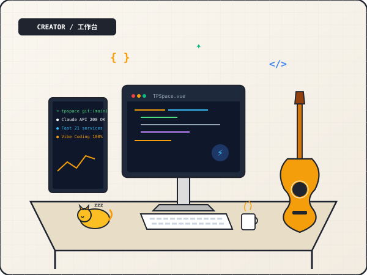
01 / Content Creator
加油T小P
抖音 4,249+ 粉丝。懂技术的科技创作者，关注前端体验与交互美学的实干派。曾与影视飓风 Tim 同台华为鸿蒙公开课，被四川观察、豫视频等官方媒体多次转发报道。
02 / Developer
TPGoFighting
GitHub 独立技术身份。深度钻研 3D 点云视觉、AI Agent 编排、分布式边缘部署与现代化全栈开发。南邮 ACM 论坛实名认证，全栈语言栈跨越 Python / TS / C++ / Java。
03 / Campus Connector
潘神
校园里的非官方代号。“考前拜唐潘，包过”——同学间流传的趣味技术节点。创办并长期维护“和T小P一起互帮互助”社群，连接南京仙林多所高校的技术与创业圈。
“代码是表达，技术是艺术，一个人可以是一个节点。AI 不是替代思考的捷径，而是将人类创造力从繁琐劳动中解放出来的放大器。”
🛠️ 解决真实问题
不为了炫技而堆砌架构，每个工具都源自日常工作与生活的真实痛点。
⚡ 追求极致交互
拒绝呆板乏味的界面。毫秒级的响应、细腻的动效与有呼吸感的排版是基本素养。
🌐 开放与连接
把探索的过程写成文章、把可复用的代码开源，让技术的力量流动起来。
03-A
全栈工程与 AI 能力矩阵
🤖 AI Agent & LLM
Claude API
OpenAI
DeepSeek
LangChain
RAG 检索增强
Prompt Engineering
Agent Skills
Tool Calling
🎨 前端与可视化
Vanilla JS
TypeScript
Vue 3 / Vite
React / Next.js
Three.js 3D
ECharts
TailwindCSS
GSAP 动效
⚙️ 后端与系统架构
Python / FastAPI
Node.js / Express
Linux (Ubuntu 24)
Nginx 反代
Cloudflare Tunnels
PM2 进程管理
Docker
SQLite / MySQL
🔍 3D 视觉与科研
PointNet++
点云语义分割
PyQt5 GUI
Open3D
Playwright 爬虫
RTX 4060 推理
03-B
生活切面与视觉碎片
Sunlight Walk · 2026
Acoustic Guitar & Chords
Black Myth · Wukong
Sci-Fi Universe & Worldbuilding
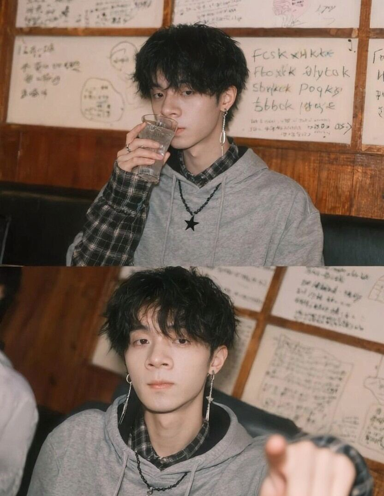
Cafe & Vibe Coding Session
Filmmaking & Visual Storytelling
03-C
连接创作者 · 社交矩阵
唐潘 · Tyler Tang
南京 · NJUPT全栈开发者 / AI 产品探索 / 独立创造者。代码是表达，技术是艺术，一个人可以是一个节点。
微信
添加个人微信
微信扫一扫添加好友
关注抖音主页
抖音扫一扫查看视频动态
04 / FUTURE & ROADMAP · 愿景与路线图
在人机共创时代，探索下一代自主系统的边界。
从个人的第二大脑（Second Brain）到多 Agent 协作工作流，持续推进 AI 原生工具研发与开源实践。这是 2026-2027 年的重点探索方向。
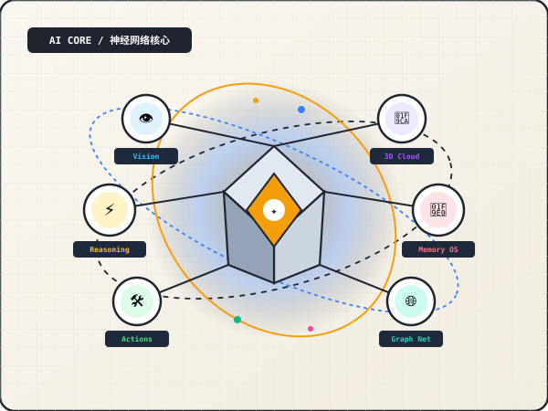
2026 Q1 · 正在进行
TP OS 2.0 · 终身个人上下文系统
从静态结构化时间线跨越至端侧嵌入式向量记忆库，具备多 Agent 主动联想、时序上下文图谱与自动生活反思能力。
- 端侧轻量向量索引与时序记忆压缩
- 微信聊天记录与文档秒级上下文召回
- 主动型每日智能简报与决策支持 Agent
2026 Q2 · 规划中
Teach Player 2.0 · 多模态视频导学系统
将双语逐字稿与计算机视觉关键帧深度融合，打造非线性、可随时插话提问并自适应出题的 AI 专属导师。
- 视频关键帧 OCR + 知识点时序锚定
- 语音交互即时打断与概念追问
- 一键生成配套在线交互试卷 (TPaper 联动)
2026 Q3 · 探索中
3D Spatial Web · 浏览器轻量点云引擎
将工业级点云语义分割成果轻量化移植至 WebGL / WebGPU 浏览器端，实现百万级三维管网模型在手机端的 60fps 丝滑交互。
- Octree 渐进式点云 LOD 加载算法
- 浏览器端即时着色器语义高亮
- 移动端触控 3D 测量与标注工具集
2026 Q4+ · 开源愿景
Open Agent Matrix · 个人超级 Portal 脚手架
将 TP Space 的全量 21 个子域名微服务编排、Cloudflare 边缘路由、Nginx 自动化配置与手绘设计系统完全开源。
- 单命令快速生成多子域名个人数字空间
- 内置 GSAP 手绘物理粒子动效设计模版
- 模块化接入 GitHub、Bilibili、Notion 数据源
04-B
三大长期核心研究命题
[RESEARCH 01]
边缘端微模型与云端超大模型的动态协作
如何利用端侧轻量小模型完成高频、私密性感知与初筛，仅在复杂决策时调度云端超大模型，在兼顾极致隐私的同时降低 90% 的调用延迟与成本。
[RESEARCH 02]
终身非结构化记忆的长周期压缩与图谱化
人类每天产生大量杂乱无章的碎片信息。如何构建自动衰减、强化与反思算法，让 AI 在数年跨度内依然能精准捕捉用户的底层偏好与决策逻辑。
[RESEARCH 03]
从固定 GUI 到自然语言即时生成界面 (Generative UI)
未来的软件不应该被预设的按钮和表单所限制。探索 Agent 根据用户当下的意图，实时在前端运行时组装最适配的数据可视化控件与交互面板。